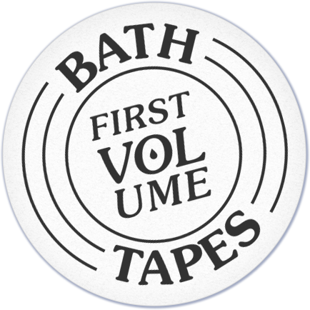
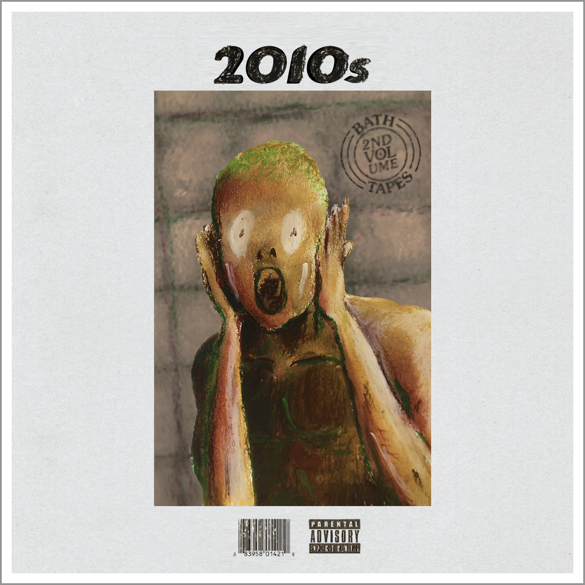
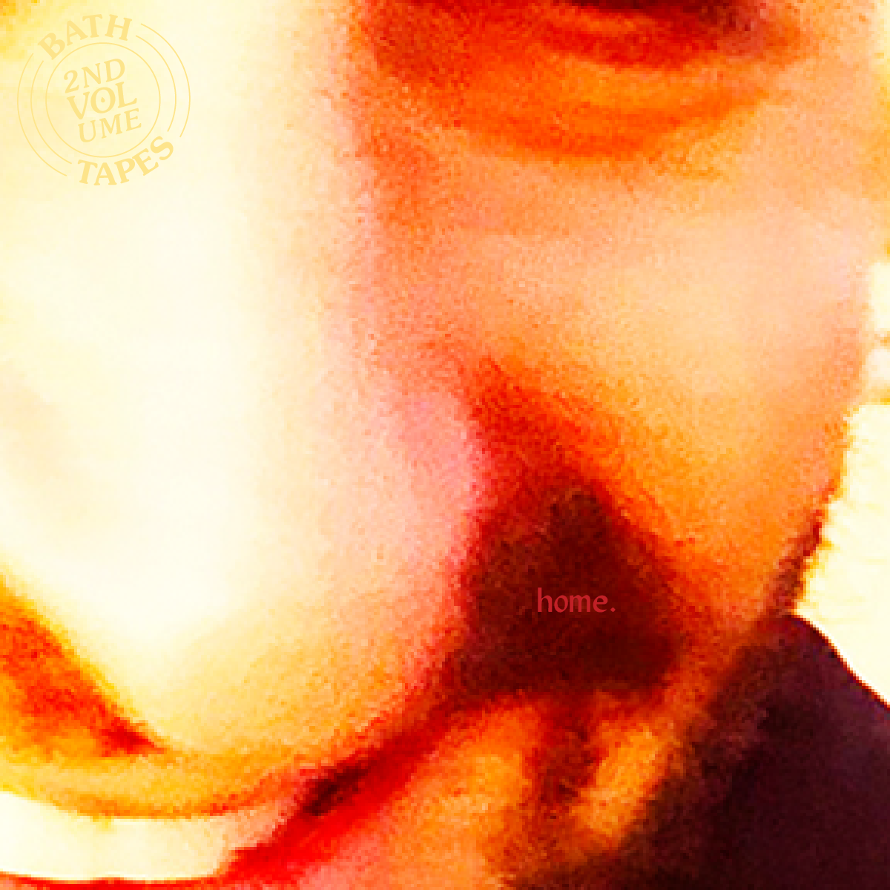
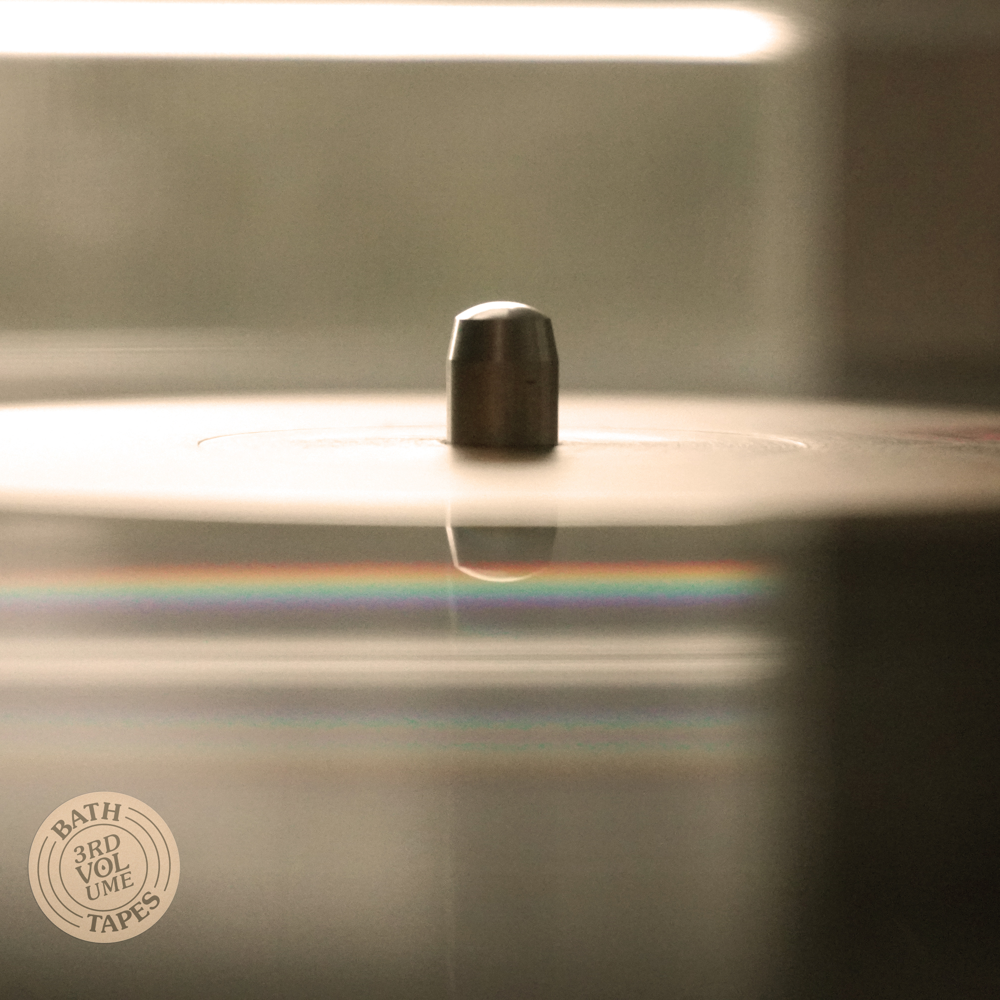

BRIEF
How do you create a culture around a CPG company? My series for Bathing Culture’s nascent blog brought together their core product with an aspirational lifestyle.
As Bathing Culture began to scale their business from a NorCal concern to national presence, they wanted deeper engagement with their Bath Cult. This blog series—a playlist, post, album artwork, and a logo—is the answer to that question, and its first post was a smash: The playlist has earned over 500 listens.
DISCIPLINES
Logo Design
Image-making
Illustration
Copywriting


Bathing Culture wanted a logo that would speak both to their product and the lifestyle they’re developing. The logo I designed literally marries the two: The image is both a water ripple and a vinyl record, bathing and music all at once.



The album artwork strives for diversity in style: My clients wanted a broad range so that future artists could contribute their own look and feel to the Bath Tapes series.

